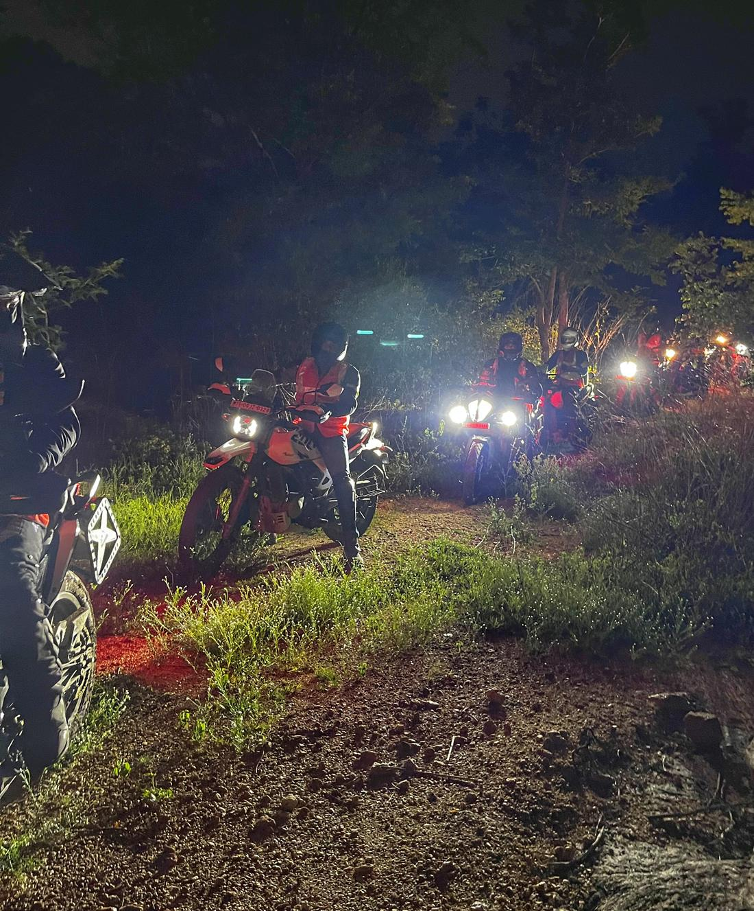
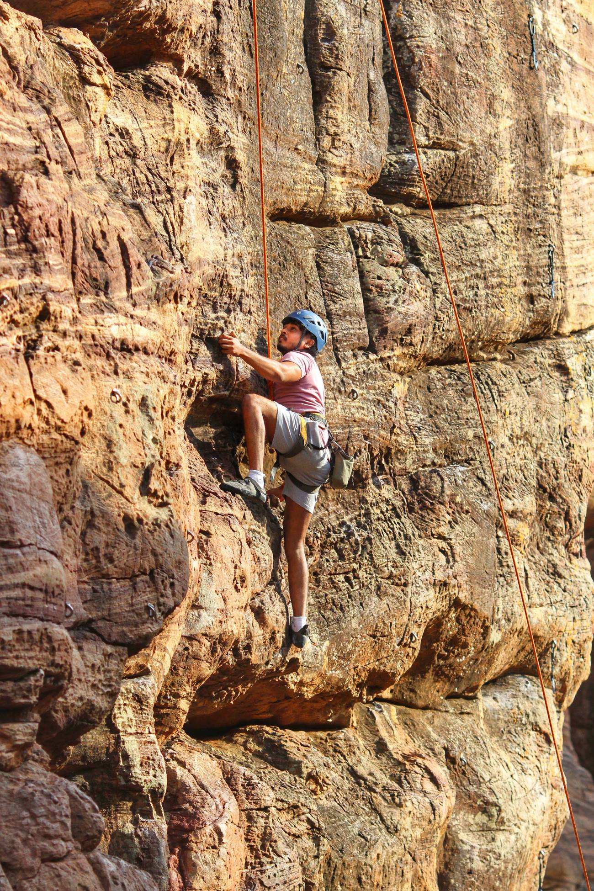
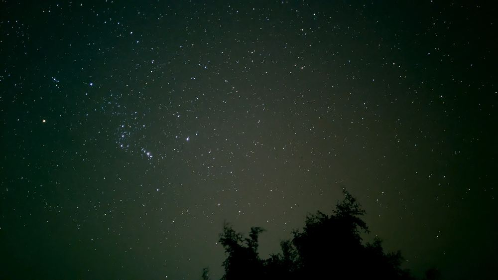
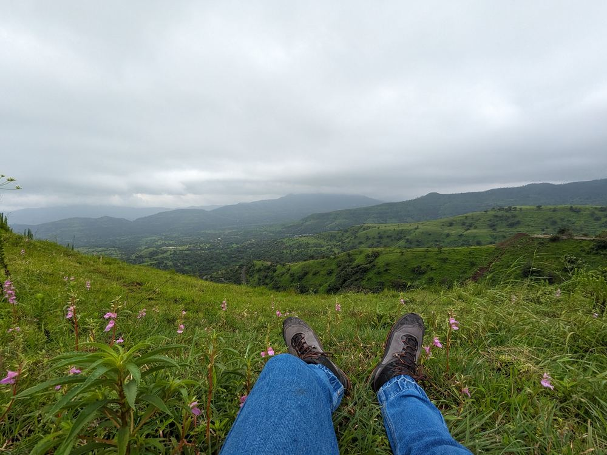
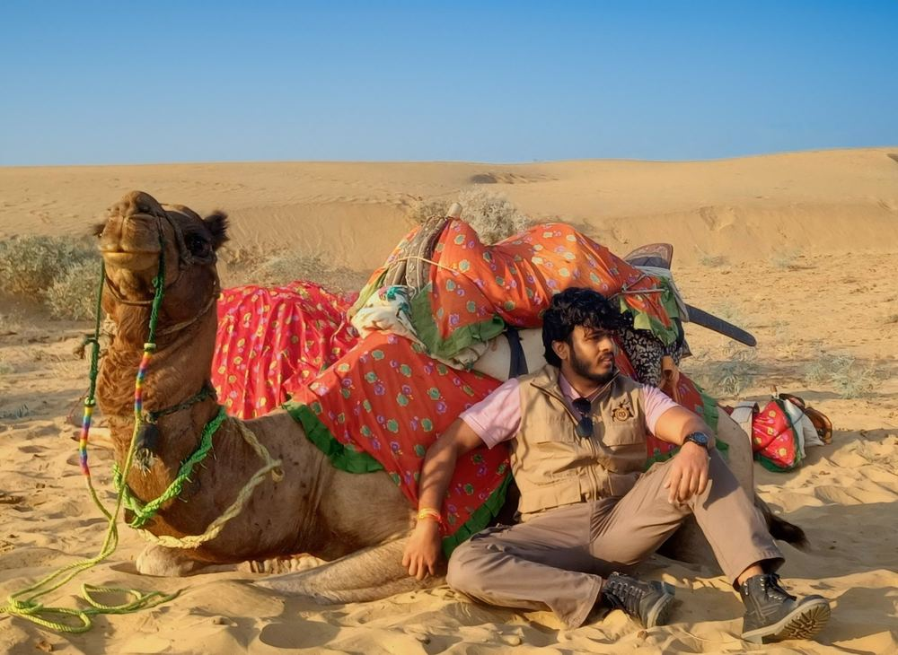
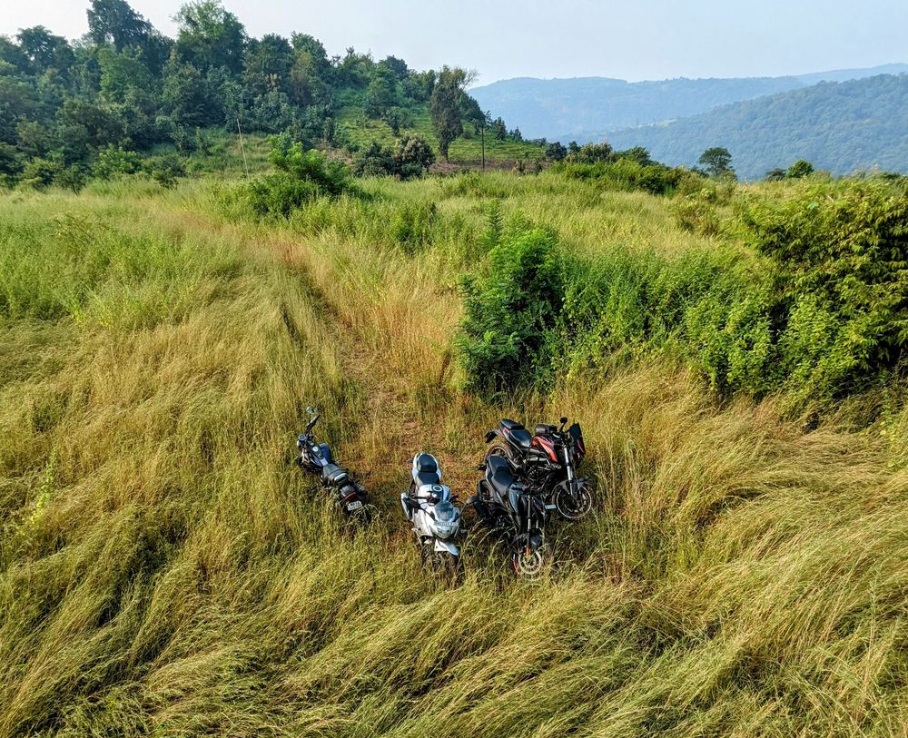

25.28962° N · 75.93739° E · LAST FIX: ACQUIRED
I can make code do clever things on a screen. Now I want it to leave the screen, pick up sensors, and move through the real world. That shift starts with what I've built below.
§ 01 · Selected work
One thread runs through these: take something that works in clean conditions, then push it until the real world pushes back. That push is what's pulling me toward field robotics, where almost nothing stays clean.
Pack Pucks started on a night ride. We were deep off-road in the dark, headlights bouncing off the trees, and it got easy to lose the rider behind you. I started wondering how a handful of cheap radios could keep a moving group aware of each other with no map and no signal.
That question became the project: a swarm of LilyGo T3-S3 nodes running SX1280 LoRa, working out peer-to-peer ranging and proximity from the ground up. Along the way came SF/BW tradeoffs, adaptive ranging profiles, and squeezing usable accuracy out of radios that cost almost nothing.
Pack Pucks taught me the hard part isn't the radio, it's everything the real world does to the signal. That gap, between what works on the bench and what survives in the field, is what I want to spend a PhD on, starting Fall 2027.
See the build →
A perception pipeline that reads a car from an image: one model identifies the manufacturer, another detects and reads the number plate, and the result gets logged to a database. My first real taste of making a model deal with messy real-world input instead of clean training data.
Production REST services at an enterprise bank technology centre, leading the team's move from Spring Boot to Quarkus for faster startup and a path to native images.
MORE§ 02 · What I work with
A software and AI foundation I'm now pointing at the physical world. Deepest in code and computer vision, newest in embedded systems and sensors.
Foundations: B.Tech in CS (ML & Data Analytics) · ML, Stanford · Deep Learning, deeplearning.ai
§ 03 · About
I've spent my career writing software, payments systems, APIs, machine-learning models, and I'm good at it. But the work I remember is the work that had to survive contact with something real. Somewhere along the way it clicked: I'd rather aim all of this at the physical world than keep it on a screen.
Off the keyboard I climb, ride, and get outdoors as often as I can. I read Stoic and Vedic philosophy to keep my ego on a short leash, and I'm relentlessly curious about how things actually work. Adventure, nature, and code keep turning out to be the same instinct: go where you don't have the map yet, and make one.
For things we have to learn before doing them, we learn by doing them. Aristotle · Nicomachean Ethics

Field notes




§ 04 · Contact
If it involves computers, wild places, and a bit of risk, let's find the way. Reach out.
Open to PhD conversations, research collaboration, and good problems.